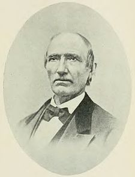

Ansel Briggs
| Ansel Briggs | |
|  |
|
|
1st Governor of Iowa
|
|
|---|---|
| In office December 28, 1846 – December 4, 1850 |
|
| Lieutenant | vacant |
| Preceded by | James Clarke |
| Succeeded by | Stephen P. Hempstead |
|
|
|
| Born | February 3, 1806 Shoreham, Vermont |
| Died | May 5, 1881 (age 75) Omaha, Nebraska |
| Political party | Democratic Party |
| Spouse(s) | Frances Carpenter (breifly) Nancy M. Dunlap (died 1847)[1] |
| Children | six died in infancy[1] Ansel Jr. (died age 15)[1] John[1] |
| Alma mater | Norwich Academy |
| Profession | Entrepreneur Businessman |
{kind=link}
Ansel Briggs (February 3, 1806, Shoreham, Vermont – May 5, 1881, Omaha, Nebraska) was the first Governor of Iowa, from 1846 to 1850. Briggs was a business entrepreneur, Sheriff and a member of the Iowa Territorial House of Representatives before being Governor. While Governor of Iowa he oversaw the formation of the government bodies of Iowa, the state's school system, and diplomatically avoided a armed border dispute with the state of Missouri. Content with his accomplishments as Governor, he declined running for a second term and returned to his business interests. Later in life Briggs was involved in parts farther west in the country and was one of the founders of the new town of Florence, Nebraska.
Contents[hide] |
[edit] Life before politics
- Life before Iowa
Ansel Briggs was born on February 3. 1806 to father Benjamin and mother Electa in the town of Shoreham, Vermont. Briggs's education started in the common schools of Vermont and continued at the Norwich Academy in Connecticut. [1][2]
While still a young man Briggs moved with his parents to Cambridge, Ohio. Briggs lived there for the next six years, starting a stagecoach business and married twice. His first marriage to Frances Carpenter was brief and then he married Nancy M. Dunlap who eventually had eight children, six that died in infancy. It was here that Briggs first ran, as a Whig party candidate, unsuccessfully for the office of County Auditor for the Guernsey County, Ohio. [1][2]
- Life in Iowa
After hearing of all the opportunities, Briggs and wife Nancy moved in 1839 to what was called Andrew Jackson County in the Territory of Iowa which was shortened to Jackson County soon after. Once settled he resumed his stagecoach business, starting by driving the coaches himself much of the time. The opportunities to expand in the new territory were immense. He soon secured contracts with the Post office Department transporting mail between Dubuque and the cities of Davenport and Iowa City, this led to more routes, expanding his business. [1][2]Briggs moved to Andrew, Iowa in 1943 purchasing many of the empty lots in the town. He was considered a good citizen making many town improvements, building roads and commercial buildings. [3]
His stone house, on N Johnson St. in Andrew, is still inhabited to this day. His family used to have a home and mill near Brush Creek north of Andrew at a place known as Bluff Mills, which is a popular public fishing area now, even though the house and mill are now gone.[citation needed]
[edit] Iowa political life
When Briggs came to Iowa he had decided to be recognized as a Democrat politically. Because his business caused him to travel to many parts of the Iowa Territory, Briggs became well known. This plus his readiness to be involved in public affairs made it easy for him to be chosen as a member of the Territorial House of Representatives from Jackson County in 1842. Briggs continued to be a representative until 1846. [1][2]Briggs also served as Jackson County deputy treasurer in 1843 and sheriff of Jackson County starting in 1844 for a two-year term. [3]
- The run for Governor
During the formation of a state government for Iowa, Briggs became a candidate against two well known opponents Jesse Williams and William Thompson. Briggs's campaign was centered on the promise of no outside businesses having influence in his administration. He had once made a toast at a political banquet, "No banks but earth and they well tilled. — Ansel Briggs " that became his campaign slogan. The Democratic convention was held in Iowa City on September 24, 1846. The vote for Democratic candidate for governor resulted in Briggs getting sixty-two votes, Jesse Williams receiving thirty-two, and William Thompson, thirty-one. Williams and Thoppson withdrew and Briggs was chosen by acclamation. The election for Iowa's first governor was held on October 28, 1846, with Briggs winning with 7,626 votes over his opponent Thomas McKnight a Whig candidate who received 7,379 votes. [1] On December 28, 1846, Iowa became the 29th state in the Union when President James K. Polk signed Iowa's admission bill into law.
- Life as Governor
True to his campaign promise of no outsider influence Governor Briggs sold his contract with the Postoffice Department and his administration was praised as "one void of any special interest . . .exhibited an independence of principle, characteristic of his nature".[1] During his term as Governor, the formation of the state government was initiated and a state school system was organized. The Missouri-Iowa boundary dispute which caused a great deal of excited controversy and even almost resorted to arms was resolved in 1848 by his skillful diplomacy. When his term ended in 1850, Briggs retired from public service preferring to returned to business. [1][2]
[edit] Life after Governorship
After his term as Governor ended Briggs returned back to his residence and businesses in Jackson County.
In 1860 he made a trip to Colorado during the mining excitement of the time. In 1863 Briggs with his son John and a large group went to the state of Montana, where he remained until 1865 when he returned to Iowa. In 1870 he moved to Council Bluffs, Iowa and later was one of the founders of the town of Florence, Nebraska. In 1881 after a very brief illness Briggs died at his son John's residence in Omaha, Nebraska. His death was greatly mourned all over Iowa. Governor Gear
issued a proclamation reciting his services to the State, and ordering
half-hour guns to be fired and the national flag on the State capitol to
be put at half-mast during the day of the funeral. [1][2]
Although he was originally buried in Omaha, Nebraska he was re-interred in 1909 in the Andrew Cemetery, Andrew, Iowa. [2]
[edit] References
- ^ a b c d e f g h i j k l Portrait and Biographical Album Washington County, Iowa. Chicago: [Acme Publishing Company. December 1887. pp. 111–112.
- ^ a b c d e f g "National Governors Association". Ansel Briggs. http://www.nga.org/portal/site/nga/menuitem.29fab9fb4add37305ddcbeeb501010a0/?vgnextoid=b2ec224971c81010VgnVCM1000001a01010aRCRD&vgnextchannel=e449a0ca9e3f1010VgnVCM1000001a01010aRCRD. Retrieved 2010-12-03. See also National Governors Association
- ^ a b "Andrew Community School". Facts from Andrew The Way It Was by the citizens of Andrew. http://www.andrew.k12.ia.us/ZZZ.New.Site/Community/Andrew/Ansel.Briggs/Ansel.Briggs.html. Retrieved 2010-12-04.
[edit] External links
- Portrait and Biographical Album Washington County, Iowa Acme Publishing Company, Chicago, December 1887, Ansel Briggs pp 111–112
| Political offices | ||
|---|---|---|
| Preceded by Territorial Governor James Clarke |
Governor of Iowa December 3, 1846 – December 4, 1850 |
Succeeded by Stephen P. Hempstead |
|
||||||||||||
{kind=link}
{kind=link}